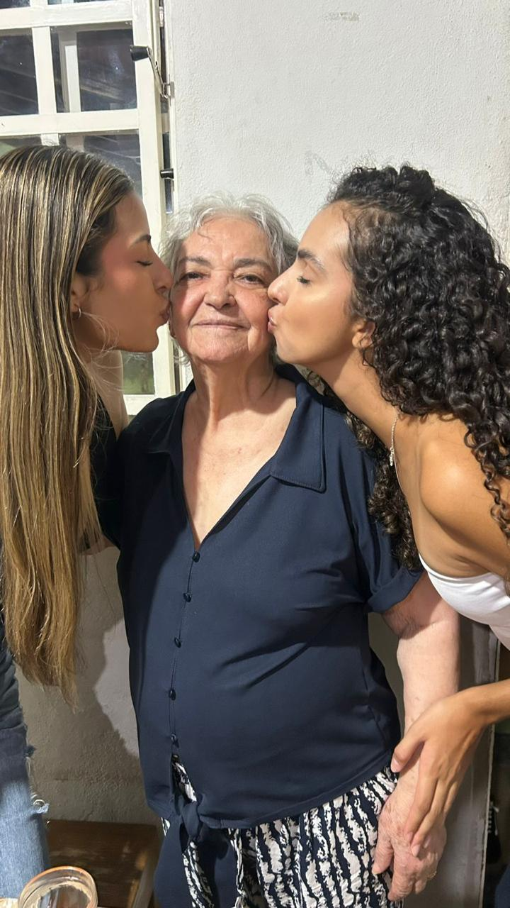
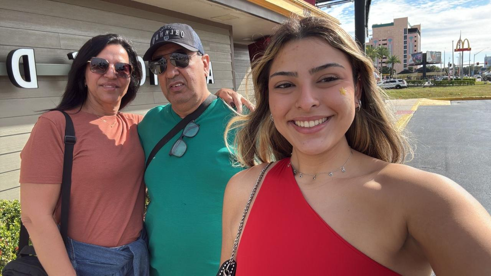
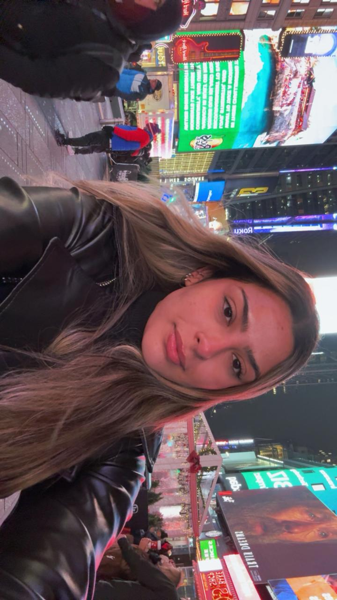
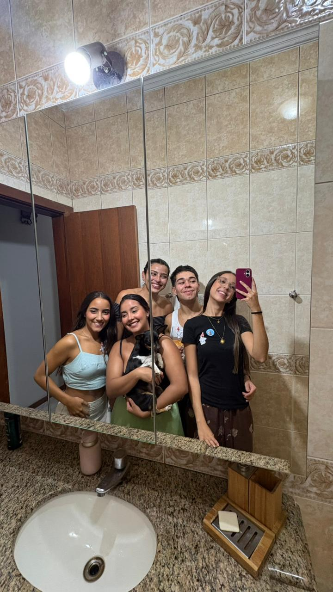
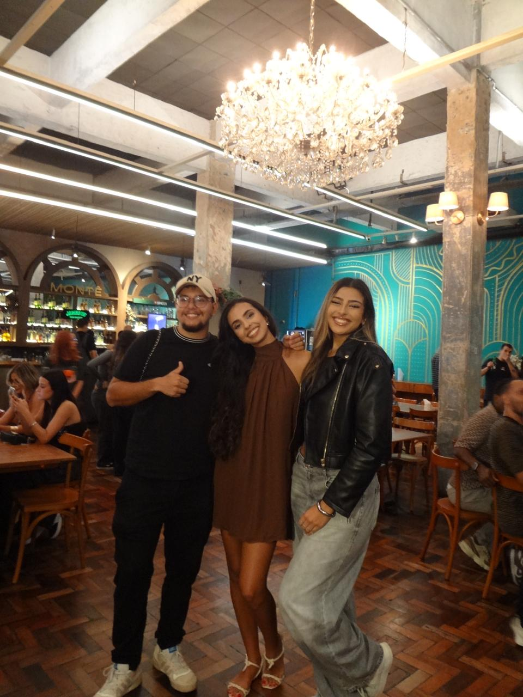
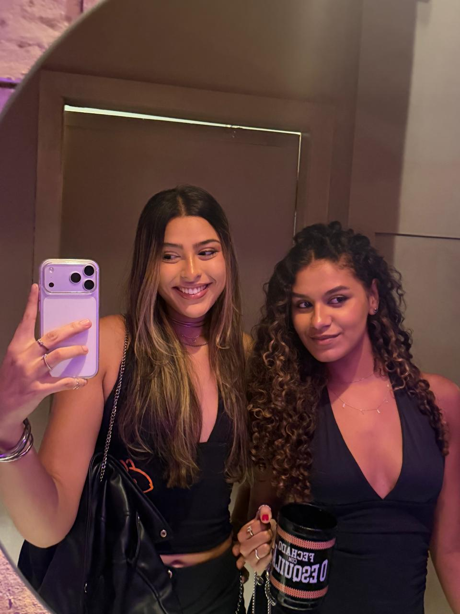
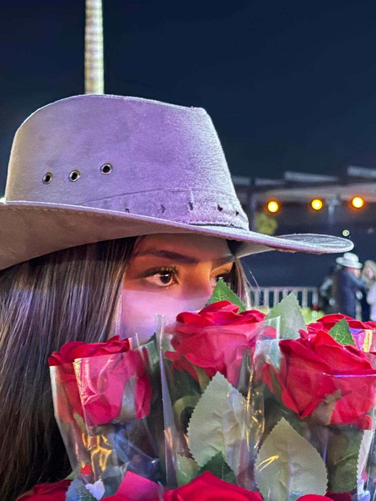
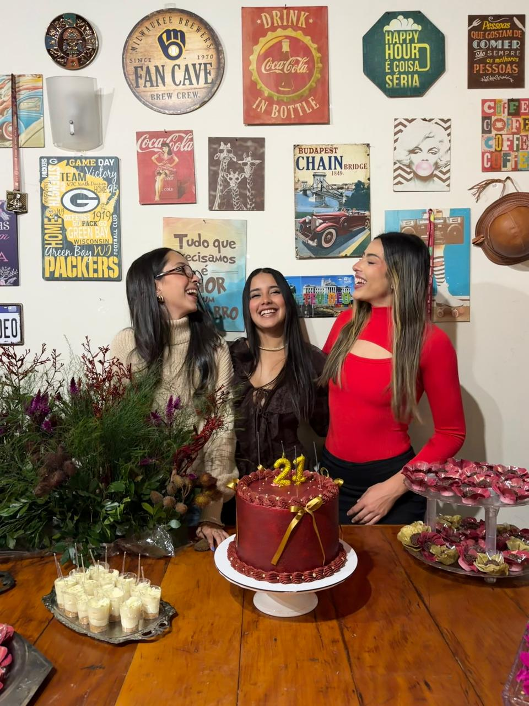

Quem eu sou
Sobre mim
Minha história
Meu nome é Anna Clara Ferraz Santos, tenho 20 anos e sou filha única. Moro com meus pais, que estão juntos — na vida e no amor — desde 1983.
Tenho duas companheiras de todos os dias: a Lili e a Lola, duas pinschers que enchem a casa de alegria. O amor por animais sempre fez parte de quem eu sou, assim como o cuidado com as pessoas ao meu redor.
Cresci cercada de livros e conversas longas à mesa de jantar. Meu pai me ensinou a ouvir antes de falar, e minha mãe me mostrou que gentileza não é fraqueza — é forma de resistência.
Aos seis anos, ganhei meu primeiro kit de médico de brinquedo. Não era só brincadeira: eu atendia bonecas, cachorros, vizinhos. Já sabia que cuidar era o meu jeito de estar no mundo.
"Cuidar de pessoas não é só uma profissão — é quem eu sou." — Anna Clara








A vocação
Desde os seis anos de idade, sabia que a Medicina era o meu lugar. Quem convive comigo costuma destacar a minha gentileza e o meu cuidado com os outros — e talvez sejam exatamente esses traços que me atraíram para a formação médica.
Sou a primeira da família a seguir esse caminho, e isso torna a jornada ainda mais especial.
Álbum
Momentos especiais
Uma seleção de fotos para deixar a página mais afetiva e mostrar diferentes partes da história da Anna Clara.